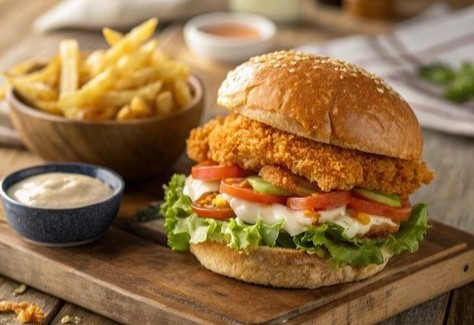

Zinger Burger

Ingredients:
- 2 chicken breasts
- 1 cup buttermilk
- 1 cup flour
- 1 teaspoon paprika
- 1/2 teaspoon cayenne pepper
- Salt and pepper
- Lettuce, pickles, and burger buns
- Mayonnaise or spicy sauce
Preparation👨🍳:
- Marinate chicken in buttermilk for at least 1 hour.
- Mix flour with spices in a bowl.
- Dredge chicken in flour mixture, then deep-fry until crispy and golden.
- Toast buns, spread mayonnaise, and layer lettuce, pickles, and chicken.
- Serve hot.